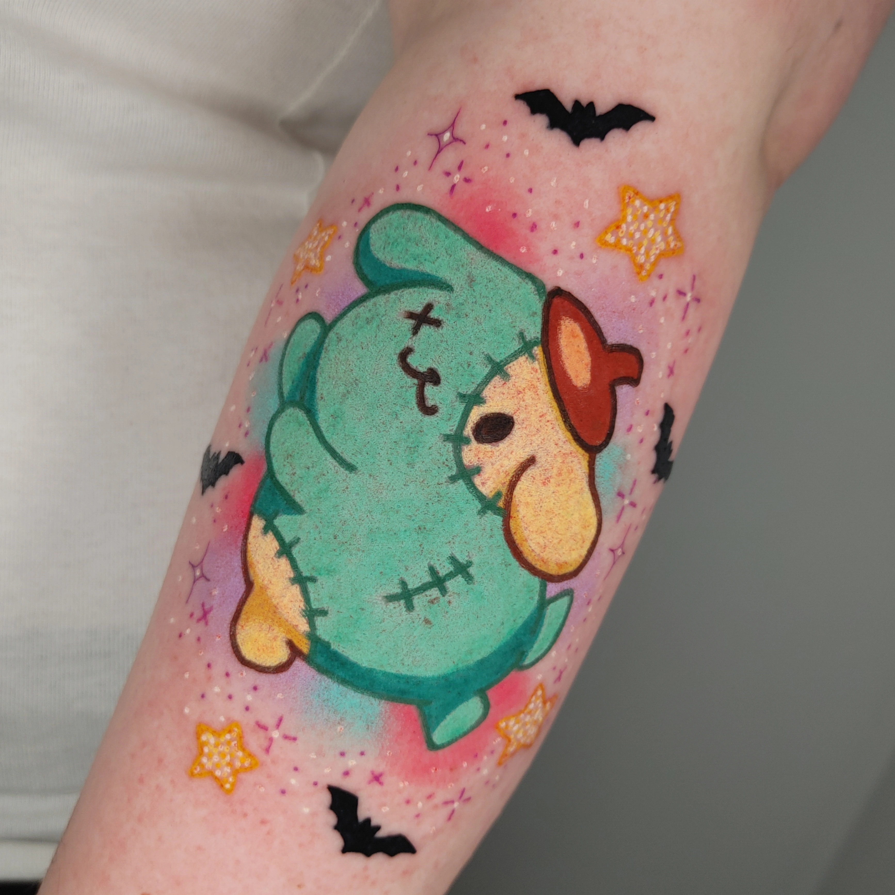
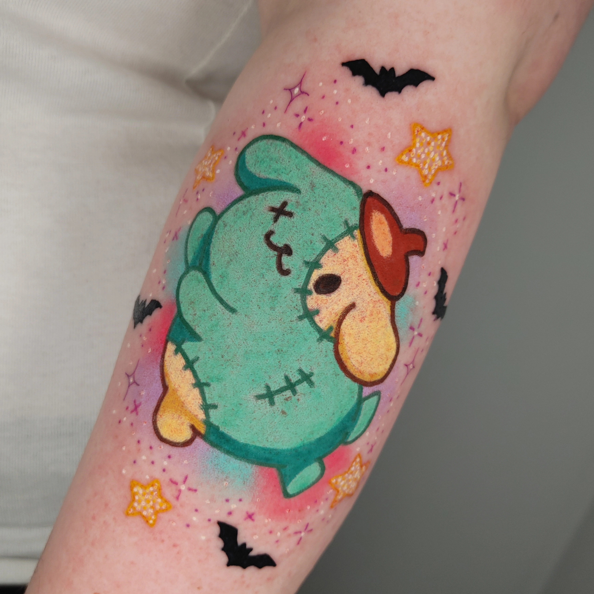
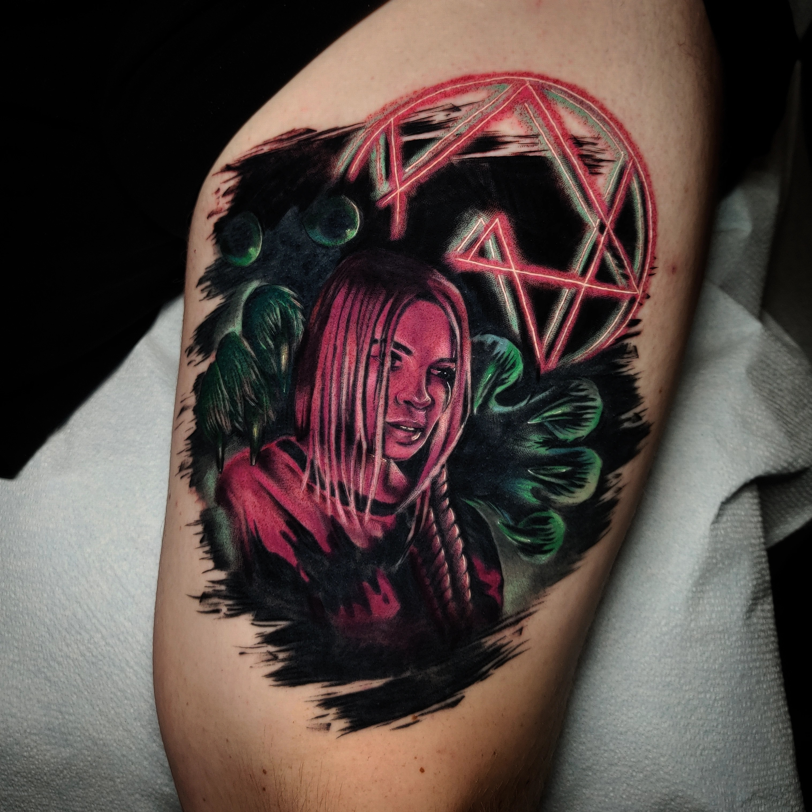
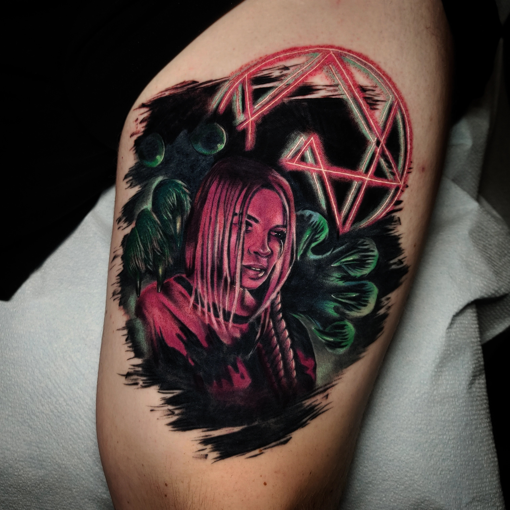

Amelia Edwards
TATTOOS
Hi, I’m Amelia Edwards, a Realism Tattoo Artist based in the beautiful Olympia, Washington. I began my tattooing journey in 2018, and quickly fell in love with the art of bringing ideas to life through skin. Realism is my style of choice; there’s something so amazing about capturing details and turning a vision into a piece of art that truly feels alive. I am a loving wife, with a husband who supports me unconditionally, and a proud mom to two incredibly talented kids who inspire me every day. Outside of tattooing, I’m always pursuing something creative, whether it’s drawing, crocheting, or learning a new skill. Creativity is a constant in my life. I’m known for being easy to talk to, deeply caring, and genuinely invested in making sure every client walks away with a tattoo they’re proud of. Maybe it’s your first piece or your tenth? I’m here to bring your ideas to life with precision and dedication.
 

 

How much does a tattoo cost?
The price of a tattoo depends on many factors, including style, size, and placement. I take a $200 deposit to book, and charge $200/hr for customs. The best way to estimate the cost of your custom idea would be to fill out a booking form so that I can see the full scope of your proposed project! Pre-drawn designs, flash, and Get-What-You-Get Tarot tattoos are all priced differently from customs. These designs and information about them can be found in my Instagram highlights!
Where are you located?
I am currently tattooing at Baker’s Dozen Tattoo in downtown Olympia! The address is: 307 4th Ave E, Olympia, WA 98501 There are metered parking spots, and pay to park lots. Free parking spots are limited, and farther away from the shop. Parking is free on weekends!
How do I prepare for my tattoo?
In the weeks leading up to your appointment, I recommend exfoliating the area to be tattooed 1-2x/week and using lotion after every shower. DO NOT exfoliate the week of your appointment! Use sunscreen every time the area will be exposed to the sun, I cannot tattoo sunburnt skin! Shower prior to your appointment, but please do not shave! If the hair is extra long, you may trim it. But, I cannot tattoo damaged skin! It’s best to leave the shaving to me! Eat a full meal and drink a full glass of water within 1 hour of your appointment time. Please DO NOT ingest alcohol or non prescribed blood thinners prior to your appointment. DO NOT apply numbing cream prior to your appointment!
What can I expect during the tattoo?
During the tattoo process, I will check in with you many times to ensure your happiness with the design/placement, comfort, and safety. If you don’t like an aspect of the design or want to move the stencil, please don’t hesitate to say something! Feel free to bring anything that makes you feel comfortable; a blanket, headphones, a pillow, stim toys, a book, and a water bottle are all good examples! You may also bring one guest if you’d like, however, I cannot guarantee that there will be enough chairs available for them to be able to sit with you while you get tattooed! If not, they will be asked to sit in the waiting area. They are totally allowed to come back and check on you and chat at any time, though! There are snacks, water, coffee, and tea available at the shop, and you are welcome to them!
How do I heal my tattoo?
If you’re not allergic to adhesive, I recommend using some sort of second skin to heal your tattoo. Personally, I use Recovery Derm, so that’s what I’ll apply at the end of your appointment. I recommend leaving the bandage on for 3-5 days, you’ll know it’s time to take it off when you can no longer move the fluid around. The easiest way to get the bandage off is in the shower/under running water with a tiny bit of a mild, unscented soap. (I use Dr. Bronner’s baby soap!) Gently wash off all the gunk, pat it dry with a paper towel, and apply an oil based salve. DO NOT use anything petroleum based! (A&D ointment, Aquaphor, Vaseline) Oil based salves I recommend and where they can be found are: Cry Baby (available for sale at Baker’s Dozen), Mad Rabbit (available at Walmart), Hustle Butter (available at Target, Ulta, and Sephora), and Vitalitree (available online). Once the tattoo is past the scabbing phase and is mostly just dry/flakey and itchy, switch to a water-based, unscented lotion. If you ARE allergic to adhesives, I would recommend traditional healing. Wash your tattoo 3x/day (more if needed) and keep it moisturized with an oil based salve. Continue doing this for about 2 weeks. Once the tattoo is past the scabbing phase, you can reduce washing and switch to a water-based, unscented lotion.